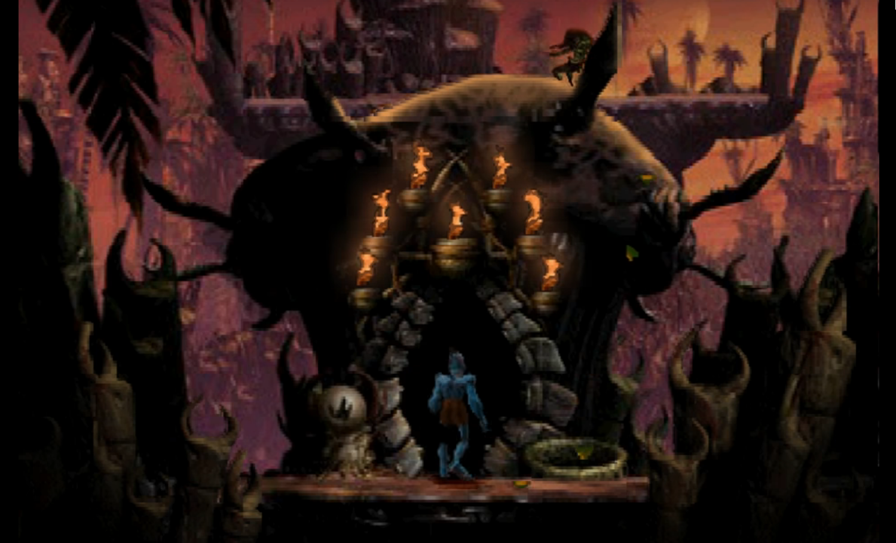
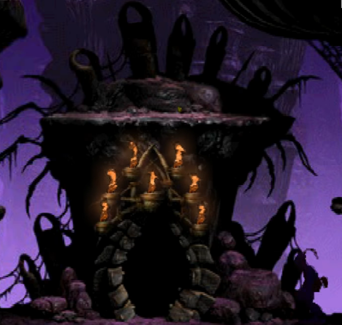

THE IRONIC THING ABOUT GLUKKONS

If you think about it, the attire of the Glukkons is extremely ironic. Their anatomy would basically let them either run quickly or swing from place to the other like a monkey.

Yet instead of embracing this side of themselves, they hide their bodies out of pride and meaningless societal customs in tight suits, that basically bind their hands together, giving them their signature wobbly walk.

KHANZUMERS - UNSTOPPABLE FORCE OR GULLIBLE FOOLS?
There is a kind of dissonance in the Oddworld Canon about the real power the consumers - or as they are called in Oddworld Khanzumers - have. Many of Lanning's interviews place them into an almost god-like status, as creatures, who have to be appeased or else they would destroy whichever franchise ruined their mood.
However, the interview linked above paints a much different picture. Here they are vastly different as these Khanzumers depict the gullible and conformist stereotype of the real-world buyers, who are used as an excuse by companies who do horrible things in the name of giving them all they want.
Source: Interview with Lorne Lanning
MUDOKON GRAVES IN NECRUM

This is not 100% confirmed, but I think it is safe to say that all those curious stone carvings are in fact tombstones or at very least shrines of long deceased Mudokons.
Alex Carroll just confirmed that these are in fact tombstones and that their design differences are intentional:
"Oh yeah, the graves are definitely specific." 
There is an incredible number of these gravestones in the Mudachee vault, which - if we assume that the members of this tribe were also as fierce as the Scrab - makes a lot of sense.
As a total anti-thesis, the Mudomo vault has very few of the stone markers and they're all well hidden or at least out of sight. This might mean that the Paramite cult had far fewer members or that these Mudokons lived reclusively and away from danger.
An interesting difference between the Mudomo and the Mudanchee tombstones is that while the former's top connects, the latter's do not, forming a pair of "horns".
A detail I very much loved is that in the "neutral" (so neither Mudomo, nor Mudanchee) parts of Necrum both tombstones appear. I think this is a really insightful design choice as they could have just as easily only included one. Yet, they instead went with the more story-wise logical version.

Similar tombstones were supposed to appear in Stranger.

These tombstones seem to also play a role in Soulstorm, as the promotional image above - picturing the replacement of Director Phleg - shows many of these artifacts scattered around in the desert surrounding Necrum. It might be worth noting that both types of tombstones appear and yet again the Mudanchee-style ones outnumber the Mudomo-ones.